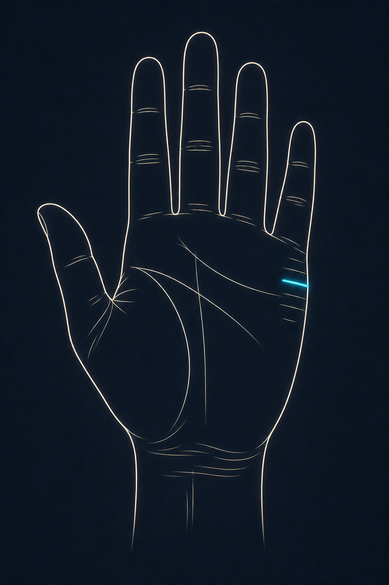

손금 106: 결혼선·연애선 깊게 보기
핵심: 결혼선은 “언제 결혼한다”를 맞히는 선이라기보다, 연애나 결혼에서 내가 어떤 태도를 보이는지 살펴볼 때 참고하는 작은 선입니다.

결혼선은 이름 때문에 “몇 번 결혼하나”, “언제 결혼하나”를 보는 선처럼 알려져 있습니다. 실제로는 그렇게 단순하게 보면 빗나가기 쉽습니다. 사랑을 받아들이는 방식은 감정선에 더 많이 드러나고, 관계를 판단하는 습관은 두뇌선에서도 보입니다. 금성구는 애정 표현, 수성구는 대화 방식과도 연결됩니다. 결혼선은 그 옆에서 연애와 결혼을 대하는 태도를 조금 더 좁게 보여주는 선이라고 보면 됩니다.
또한 손금은 문화권과 유파마다 해석이 다릅니다. 이 글은 전통 손금 해석을 바탕으로 한 엔터테인먼트 콘텐츠이며, 관계의 성패를 단정하거나 현실의 선택을 대신하지 않습니다.
1) 위치: 새끼손가락 아래 옆날
보는 위치: 새끼손가락 아래 수성구 쪽, 손바닥 바깥 옆면에 있는 짧은 가로선입니다.
기준선: 감정선 위쪽에서 새끼손가락 밑동 아래까지의 공간을 봅니다.
주의: 손바닥 중앙의 굵은 가로선은 결혼선이 아니라 감정선일 가능성이 큽니다.
손을 완전히 펴면 옆면의 선이 흐려질 수 있습니다. 손바닥을 살짝 오므리거나 새끼손가락 쪽 옆면을 비스듬히 보면 짧은 가로선들이 더 잘 보입니다.
2) 길이: 관계를 대하는 지속력
길고 선명한 결혼선: 한 번 마음을 정하면 쉽게 흩어지지 않는 쪽입니다. 표현이 화려하지 않아도 약속, 생활 리듬, 오래 가는 신뢰를 중요하게 봅니다.
짧은 결혼선: 관계를 가볍게 본다는 뜻은 아닙니다. 가까워지는 데 시간이 걸리거나, 연애 중에도 자기만의 시간을 꽤 중요하게 여길 수 있습니다.
손바닥 안쪽으로 깊게 들어가는 선: 연애가 감정에서 끝나지 않고 생활 계획, 책임, 미래 선택까지 이어지기 쉽습니다.
3) 깊이와 선명도: 관계의 체감 강도
깊고 깨끗한 선: 한 관계에 집중하는 힘이 강하고, 애정의 기준이 비교적 분명합니다.
얇지만 곧은 선: 조용하고 섬세한 애정 표현에 가깝습니다. 큰 이벤트보다 신뢰와 예의를 더 편하게 느낄 수 있습니다.
흐리고 잔선이 많은 경우: 마음은 움직이는데 확신이 늦게 옵니다. 좋아하는 마음과 별개로 생각이 많아져서 스스로도 헷갈릴 때가 있습니다.
4) 기울기: 관계에서 기분이 올라가는지, 무거워지는지
살짝 위로 올라가는 결혼선: 좋은 관계가 들어오면 기분이 살아나는 편입니다. 표정이 밝아지고, 일이나 생활에도 힘이 붙는 식입니다.
수평에 가까운 결혼선: 안정과 균형을 중요하게 여깁니다. 뜨겁게 몰아치는 관계보다 서로의 생활을 크게 흔들지 않는 관계가 더 편합니다.
아래로 처지는 결혼선: 좋아하는 마음이 있어도 걱정과 책임감이 먼저 커질 수 있습니다. 감정선이 약하거나 잔선이 많다면, 상대를 챙기느라 내가 먼저 지치는 일이 없는지 같이 봐야 합니다.
5) 갈라짐과 포크: 방향 차이와 재조율
끝이 두 갈래로 갈라짐: 둘이 좋아해도 생활 방식, 거리감, 가치관이 자주 부딪힐 수 있습니다. 이것만 보고 이별을 말하긴 어렵습니다. 다만 “좋아하니까 괜찮겠지”로 넘기기보다, 어떻게 맞춰 살지 자주 이야기해야 하는 선입니다.
초입이 갈라짐: 시작부터 마음이 단번에 정리되지 않는 경우가 많습니다. 타이밍, 거리, 가족이나 일 같은 조건이 관계 초반에 끼어들 수 있습니다.
위아래로 잔가지가 많음: 마음은 있는데 주변 상황이나 내 안의 흔들림이 같이 따라옵니다. 이럴 때는 결혼선만 보지 말고 감정선이 안정적인지, 두뇌선이 너무 복잡하지 않은지도 같이 보는 게 좋습니다.
6) 끊김, 섬, 사슬: 관계 스트레스 표시
중간 끊김: 중간에 끊긴 선은 관계의 공백기나 생각의 전환, 생활 조건의 변화를 떠올리게 합니다. 선 하나가 끊겼다고 바로 끝을 말할 수는 없습니다. 주변에 잔선이 많은지, 감정선이 흔들리는지도 같이 봐야 합니다.
섬 모양: 오해나 거리감, 말하지 못한 부담이 쌓이기 쉽습니다. 마음은 있는데 말을 늦게 꺼내는 관계에서 자주 이야기되는 표시입니다.
사슬처럼 이어진 결혼선: 감정이 예민하고 섬세합니다. 좋아하는 마음이 있어도 관계가 편안하게 자리 잡기까지 시간이 걸릴 수 있습니다.
7) 여러 줄: 결혼 횟수보다 관계 민감도
결혼선이 여러 개라고 해서 결혼을 여러 번 한다고 말하긴 어렵습니다. 마음에 오래 남은 관계가 있었거나, 관계 문제에 예민하게 반응하는 손에서 이런 짧은 선들이 보이곤 합니다. 시간이 지나며 연애 기준이 달라진 흔적으로 읽기도 합니다.
가장 선명한 한 줄: 지금 가장 크게 작동하는 관계, 또는 오래 기억에 남는 관계의 축.
위쪽의 짧은 선: 뒤늦게 생기는 관심, 성숙해진 관계 기준, 나중에 찾아오는 안정감과 연결해 보기도 합니다.
아래쪽의 짧은 선: 초기 연애 경험이나 마음의 흔들림, 관계를 배우던 시기의 흔적으로 보기도 합니다.
8) 감정선·수성구와 함께 읽기
감정선이 깊고 결혼선도 선명: 마음이 정해지면 오래 가는 힘이 있습니다. 좋아하는 마음과 책임감이 따로 놀지 않습니다.
감정선은 강한데 결혼선이 흐림: 사랑의 감정은 큰데, 그것을 약속이나 생활로 옮기는 데는 시간이 필요합니다.
수성구가 도톰하고 결혼선이 깨끗: 대화가 관계를 살려주는 손입니다. 서운함을 쌓아두기보다 말로 풀어갈 여지가 큽니다.
금성구가 강하고 결혼선에 잔선이 많음: 애정은 많은데 그만큼 에너지도 빨리 씁니다. 상대를 챙기다 내 컨디션을 놓치기 쉽습니다.
9) 양손 비교: 타고난 방식과 현재 방식
양손을 같이 보면 훨씬 읽기 쉽습니다. 보통 덜 쓰는 손은 타고난 관계 성향, 자주 쓰는 손은 지금의 선택과 생활 습관을 보는 기준으로 삼습니다. 자주 쓰는 손의 결혼선이 더 또렷해졌다면 관계 기준이 현실적으로 정리되는 중일 수 있습니다. 반대로 흐려졌다면 요즘은 관계보다 회복, 일, 개인 시간이 더 큰 자리를 차지하는 때일 수 있습니다.
10) 좋은 흐름 신호
선명하고 과하게 깊지 않은 한 줄: 안정적인 관계를 원하지만 집착으로까지 가지 않는 균형.
끝이 위로 부드럽게 향함: 관계가 생활 의욕과 자기표현을 살려주는 상태.
감정선과 결혼선 사이가 깨끗함: 감정과 현실 약속 사이에 불필요한 걱정이 적은 상태.
11) 조심 신호
결혼선 위를 자르는 가로·세로 잔선: 외부 간섭, 일정 압박, 말의 오해가 관계 사이에 끼어들기 쉽습니다.
아래로 강하게 처지는 선: 관계의 부담을 혼자 떠안고 있지는 않은지 돌아볼 필요가 있습니다.
사슬·섬이 반복: 마음의 확신보다 걱정이 먼저 올라오는 시기일 수 있습니다.
FAQ
Q. 결혼선이 없으면 결혼운이 없나요?
A. 아닙니다. 선이 약하면 관계를 천천히 여는 쪽이거나, 결혼보다 개인의 독립성과 생활 안정이 더 중요할 수 있습니다.
Q. 결혼선이 여러 개면 여러 번 결혼하나요?
A. 그렇게 단정하긴 어렵습니다. 오래 기억에 남는 관계가 있었거나, 시기마다 연애 기준이 달라진 흔적으로 보는 편이 더 자연스럽습니다.
Q. 결혼선이 갈라지면 이별인가요?
A. 반드시 그렇지는 않습니다. 방향 차이나 맞춰야 할 부분이 있다는 뜻에 가깝습니다. 감정선과 주변 잔선을 같이 봐야 합니다.
Q. 어느 손을 봐야 하나요?
A. 양손을 모두 봅니다. 덜 쓰는 손은 타고난 관계 성향, 자주 쓰는 손은 지금의 선택과 생활 속 관계 방식을 보는 기준으로 삼습니다.
Q. 결혼 나이를 정확히 볼 수 있나요?
A. 전통적으로 나이를 나눠 보는 방식은 있지만, 정확한 예측처럼 쓰기는 어렵습니다. 결혼선은 시기를 맞히는 도구라기보다 관계 습관을 살피는 쪽에 더 잘 맞습니다.
결혼선은 작고 짧지만 꽤 많은 이야기를 담고 있습니다. 다만 선 하나로 운명을 정할 필요는 없습니다. 감정선과 손 전체의 균형까지 같이 보면서, 내가 연애와 결혼에서 어떤 습관을 반복하는지 살피는 정도가 가장 좋습니다.
← 손금 메인으로 돌아가기